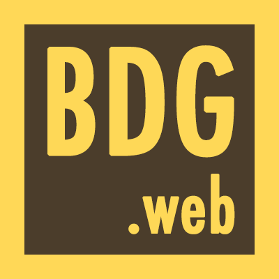

<!DOCTYPE html><html lang="pl"><head><meta charset="UTF-8" /><title>BdgWeb Meetup</title><link href="stylesheets/all.css" rel="stylesheet" /></head></html><body><header class="top"><div class="row"><div class="logo medium-3 columns"></div><div class="title medium-9 columns"><div class="row"><h1>Bydgoszcz Web Dev</h1><h2>Wspólnota bydgoskich web devów</h2></div></div></div></header><section class="main"><div class="row"><div class="about medium-6 columns"><h2>Bydgoszcz Web Dev:</h2><ul><li>Regularne spotkania o tematyce <strong>web devu.</strong></li><li>Hostowane w <strong>Bydgoszczy</strong>lecz nie tylko dla Bydgoszczan.</li><li><strong>Prezentacje, lighting talki i networking</strong>na każdym spotkaniu.</li><li>Zorganizowane dla<strong>wszystkich zainteresowanych</strong>web devem. Nie ważne czy dopiero zaczynasz czy jesteś wyjadaczem.</li><li>Zapraszamy nieważne jakim językiem programowania władasz i w jakim frameworku pracujesz na codzień. Zapraszamy programistów<strong>ze wszystkich języków i frameworków</strong>.</li></ul></div></div><div class="row"><div class="next-meeting medium-7 columns"><h2>Najbliższe spotkanie:</h2><h4>Gdzie i kiedy:</h4><ul><li>18:00 w <a href="https://www.facebook.com/ilikestrefa" target="_blank"><strong>Klubie Strefa</strong></a></li></ul><h4>Agenda:</h4><ul><li>Coś tam o rubim</li><li>Coś tam o javie</li></ul></div></div></section><footer><div class="row"><div class="medium-12 columns"><h2>Bądź na bieżąco!</h2><p>Odwiedź nas na portalach społeczniościowych:</p></div></div><div class="row"><ul class="social-media"><li class="facebook medium-4 columns"><a src="#" target="_blank"><span>Facebook </span><i class="fi-social-facebook"></i></a></li><li class="twitter medium-4 columns"><a src="#" target="_blank"><span>Twitter</span><i class="fi-social-twitter"></i></a></li><li class="google medium-4 columns"><a src="#" target="_blank"><span>Google+</span><i class="fi-social-google-plus"></i></a></li></ul></div></footer></body>